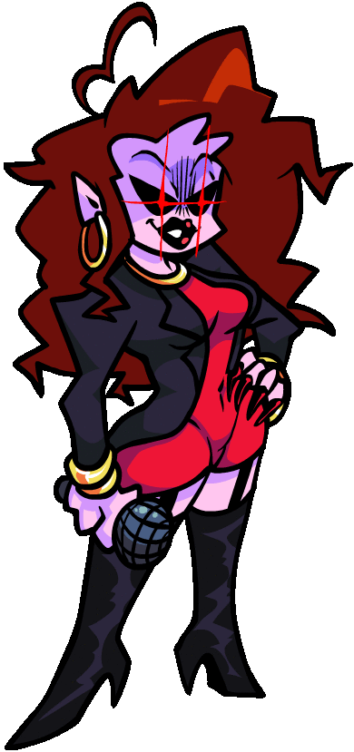
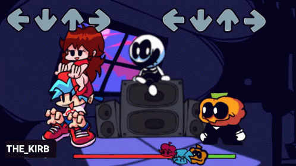

I'm very sorry to inform you that your screen size is not suitable for this feature
Please use a device that has a screen size wider than 800px, thank you
X
1. Explain the core game mechanic of the game.
Friday Night Funkin''s core game mechanics focus on beats and music, with an additional element
of the story. Here is my explanation of the core game mechanics:

The game is a dancing and singing music competition (kinda sounds like the
legendary game Audition), the player must press the corresponding keys when the
icons appear on the screen. The arrow icon will move from the bottom to the top
of the screen, and the player needs to press the corresponding keys at the right
time to defeat the opponent.
Players must participate in rhythm battles with different characters, each
character representing a different tune or genre of music. Each match consists
of multiple rounds (maximum 3 rounds and minimum 2 rounds), each round
represents a part of the track and the difficulty increases gradually.
The gameplay of Friday Night Funkin’ comes with a simple but interesting
storyline. Players follow the story of Boyfriend and Girlfriend on their journey
to win Girlfriend's heart. The different characters have unique views and
personalities, combined with the original music selected during the selection
process to enhance that character's unique personality.
Difficulty levels will increase over time or each round, creating a challenge
for players and encouraging them to improve their keystroke skills. The
opponents in the game have different difficulty levels, from easy to difficult,
to suit many different players.
Much of the game's appeal comes from the music and @evilsk8r's drawing style,
which I attribute to graffiti. The music tracks are carefully selected and
highlight the style of each character and creation. @evilsk8r's unique art and
drawing style has created an impressive and unique visual style for players.
Besides the above creative drawing style, the game also has @DitchuArt's pixel
art style in a special level (Boyfriend character confronts Senpai character in
week 6). The existence of many art styles in the game creates a diversity of
perspectives for players (a typical example of using multiple art styles can be
mentioned in the game Sally Face with the scene of Sally Face in the
multiverse). Unique pixel art creates a nostalgic and familiar visual style for
players.
2. Explain and compare how music is integrated with the gameplay of the game.

Friday Night Funkin''s integration of music into the gameplay demonstrates precision and
creativity, creating a unique and engaging musical experience. Below is my take on Friday Night
Funkin''s approach to integrating music into the game's gameplay:
The music of each stage is divided into small parts (ranging from 2 to 3 parts)
corresponding to each beat in the game. Each small part represents a specific
melody, and the player must interact with each of these parts by pressing and
holding the correct symbol on the keyboard (4 arrows on the key) during play.
During gameplay, the player needs to identify the icon moving up from the bottom
of the screen and determine the appropriate character to press or hold. Players
feel sounds corresponding to their every move, creating synchronization between
gameplay and music.
Dynamic sound effects are used to create precise and exciting reactions as
players perform well-timed actions. During the gameplay, I realized that the
game's dynamic sound is applied to the player's pressing of the correct or
incorrect characters. If the letter is pressed correctly, the sound produced
will be perfect and create a complete piece of music. On the contrary, if the
sound is received incorrectly, a low note will be heard, signaling to the player
that they are out of tune with the song.
The beat of the music requires the player to closely synchronize with the
movements and beats in the game. The game's difficulty increases with the
complexity of the music, creating a constant challenge. These challenges will
stimulate players' interest.
Friday Night Funkin''s variety of music and characters contribute to a rich and
enjoyable musical experience. Each character has a unique music and style,
contributing to helping players feel a diverse experience and creativity in
music.
3. What is the motivation that keeps players playing & coming back in these games? Explain
how the game creates that motivation with its systems & design.
Friday Night Funkin' is the third game I've tried. The gameplay is similar to Beatstar and Magic
Tiles 3, but the appearance of specific characters along with the plot construction has made a
big impression on an indie game maker specializing in plot and character design like me. The
following is the motivation that the game creates for players based on my personal opinion:
First motivation (click
me)
Second motivation (click
me)
Third motivation (click
me)
Fourth motivation (click
me)
4. Describe the style and aesthetic of the game. Explain how the game achieves that aesthetic
through its design, art, and audio.
Friday Night Funkin' with @evilsk8r's graffiti style has created a unique and outstanding image.
This creates a visual style with a creative street style that makes the game more suitable when
it can remind players of fierce street rap battles. Each character has a unique design with
their own personality and style, accompanied by unique music that reflects their personality.
The game interface is designed to be easy to see and understand, with simple but impressive
icons and effects.
Friday Night Funkin''s music is diverse and creative, covering many music genres such as pop,
rap, funk, and EDM. The soundtrack is tightly integrated with the gameplay, creating a unique
musical and rhythmic experience. Dynamic sound effects are integrated as players make well-timed
movements, enhancing the audio experience and creating harmony with the visuals. Images and
music are closely synchronized, increasing aesthetics and providing a harmonious experience.
The gameplay mechanics of Friday Night Funkin' focus on rhythm gameplay, where the player needs
to press the keys to the beat of the music. Accuracy and synchronization with the beat are the
keys to passing levels. The character animations in the game are designed and executed smoothly,
with flexible motion effects, creating an engaging and beautiful experience. Each opponent has a
unique stage with matching visuals and music, adding variety and aesthetics to the game.
5. Propose briefly 1 critical point you want to improve.
Briefly: The game should develop a fighting mode between players or teams. You
can consider adding the ability to customize the character according to the player's wishes.
Details: It is impossible to deny the attraction of the contrast in the game as
I mentioned quite a lot before. However, competition in games is the current trend. Gamers don't
just need a game with beautiful graphics or an engaging storyline, what they need is interaction
with the community. Creating a competitive environment among gamers will be a source of
motivation to continue playing the game and finding one's place in it. Some examples include
“Faker” and the inspiration for League of Legends gamers, “Let me solo her” and the inspiration
for Eldenring gamers.
The ability to customize their own character allows players to create their own personality. For
players who love beauty and creative freedom, it will be a great source of motivation to
continue participating in the game. We can mention examples of big games that are creative in
character design such as Minecraft and Roblox.